Biografens Historia
I samband med att Lannaskede kommun byggde nytt kommunalhus i Landsbro 1959, byggdes även biografen som hade samma modell som Ceylonbiografen i Nacka och var därför en av de modernaste och bäst tekniskt utrustad. Arkitekt för det hela var Evald Kjellberg. Det fanns plats för 224 personer i salongen, golvet sluttar så sikten är bra var man än väljer att sitta. Från början drevs biografen av bröderna Axelsson i Nässjö. Gert Ljungkvist, elektriker i Landsbro var maskinist. Man körde film 3 kvällar i veckan, på onsdagar, fredagar och söndagar. Utrustningen bestod av Ernemann projektorer, för ljud och optik svarade Kino Service i Stockholm. Man kunde visa Normalfilm, Vidfilm, Vista vision och Cinemascope. Som invigningsfilmer den 30 Oktober 1959 visades "Sayonara" och "Mannekäng i rött".
År 2012 genomgick biografen en ombyggnad av den tekniska utrustningen genom att man byter ut en av maskinerna som funnits på plats sedan 1959 mot en ny digital Barco maskin. Nu har man möjlighet att visa digitalfilm i formaten Vidfilm och Cinemascope, maskinen är redo för den nya tekniken 3D. Man har i dag möjlighet till att använda spelkonsoler, DVD-spelare och koppla upp sig med satellitmottagare för att visa olika slag av evenemang såsom hockeymatcher och olika former av konserter.
År 2016 genomförde biografen en ljuduppdatering till digitalt ljud, med hörselslinga för hörselnedsättning. Under vecka 9 drogs högtalarkabel till det nya systemet — totalt 1000 meter kabel. Den nya filmduken anlände under vecka 15 och monterades upp tillsammans med övrig ljudanläggning.
Vecka 19 kom den nya filmduken upp, något försenat men nu på plats. Biografen har nu ett 7.1-ljudsystem med 14 surroundhögtalare, 3 fronthögtalare och 1 lågbas, drivet av 4 slutsteg med en total effekt på 2500 watt.
År 2026 skapades den nya hemsidan av gymnasieeleven Barnabás Koltai (TE24A). Bilder och information fördes över från gamla hemsidan och hemsidan fick en ny stil. Nu är hemsidan anpassad för mobila enheter och aktuella filmer visas på startsidan.
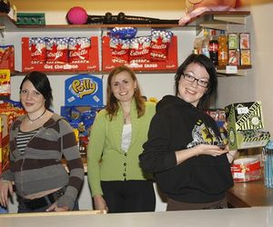
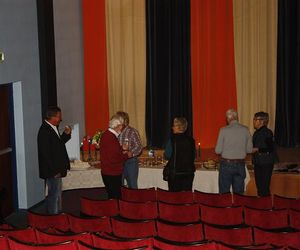
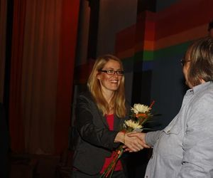
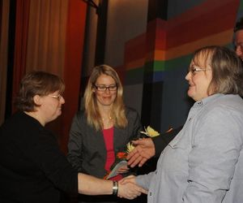
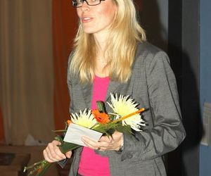
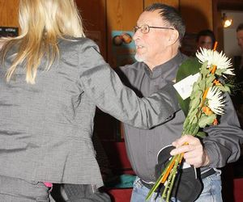
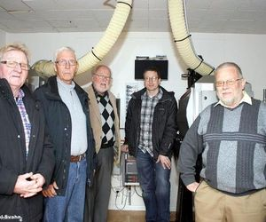
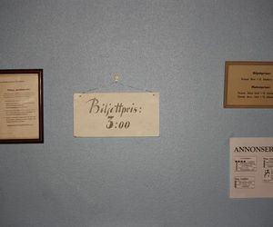
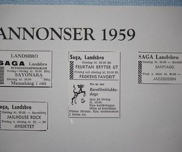
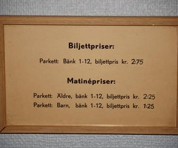
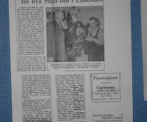
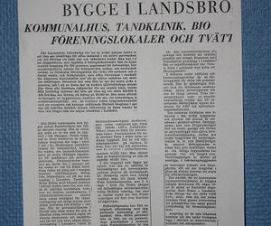
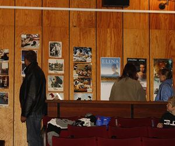
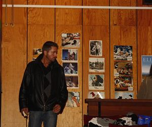
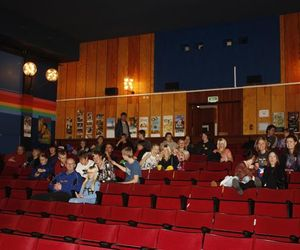
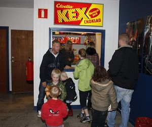
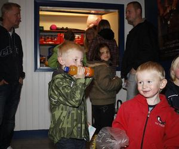
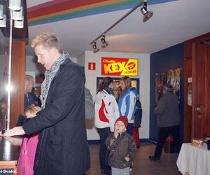
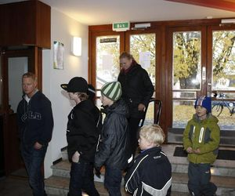
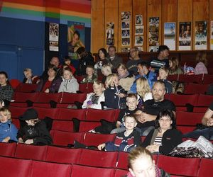
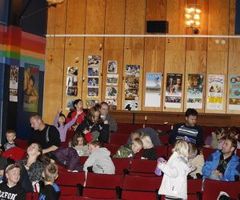
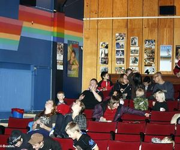